Darba uzsākšana
Lomu centrs
Lai sāktu lietot Latvian Intrastat Reporting Localization, nav nepieciešami specifiski lomu centri, jo funkcionalitāte ir pieejama izmantojot pogu Meklēt lapu vai atskaiti...
Konfigurācijas pakotnes importēšana
Attiecinot LVI.LVI.INTRASTAT konfigurācijas pakotni, galvenie pamatuzstādījumi tiek sagatavoti, lai jūs varētu uzsākt lietot Latvian Intrastat Reporting Localization nekavējoties.
- Klikšķiniet uz pogas Meklēt lapu vai atskaiti... 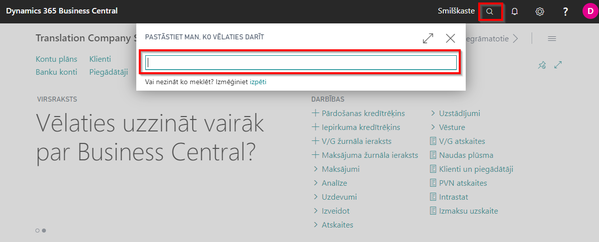
- Ierakstiet Konfigurācijas pakotnes un izvēlieties to no sadaļas Lapas un uzdevumi 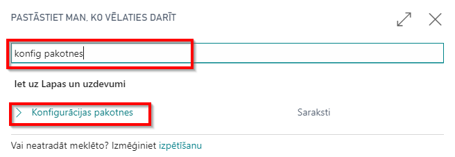
- Konfigurācijas pakotņu sakarstā iezīmējiet LVI.LVI.INTRASTAT rindiņu un nospiediet pogu Attiecināt pakotni 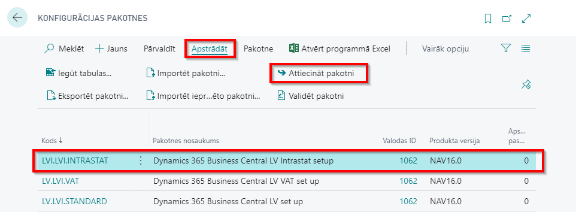
Konfigurācijas pakotne nodrošina sekojošus uzstādījumus:
- Valstis/Reģionus
- Kravas nosūtīšanas veidus
- Valsts/ reģiona tulkojumus
- Transakciju tipus
- Transportēšanas metodes
Piekļuves tiesību kopas
Lietojot Latvian Intrastat Reporting Localization ir nepieciešams piešķirt lietotājiem piekļuves tiesību kopu D365 FINANCIAL REP.
Priekšnosacījumi
Pēc konfigurācijas pakotnes attiecināšanas nepieciešams papildināt sekojošu informāciju:
- Klikšķiniet uz pogas Meklēt lapu vai atskaiti...
- Ierakstiet Uzņēmuma informācija un izvēlieties to no saraksta Lapas un uzdevumi 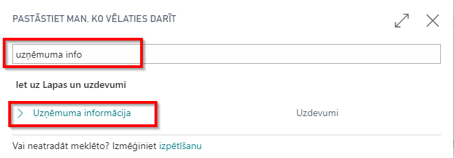
- Pārliecinieties, ka sekojoša informāciju par uzņēmumu ir aizpildīta:
- Nosaukums;
- Adrese;
- Pasta indekss;
- Valsts;
- Reģistrācijas numurs;
- PVN reģistrācijas numurs.
Uzstādījumi
Pēc LVI.LVI.INTRASTAT konfigurācijas pakotnes attiecināšanas, ir jāveic uzstādījumi sekojošos logos:
- Intrastat uzstādījumi;
- Intrastat žurnālu veidnes;
- Tarifu numuri, Transakciju tipi, Transportēšanas metodes, Kravas nosūtīšanas metodes;
- Preču kartiņas;
- Klientu/ Piegādātāju kartiņās
Intrastat uzstādījumi
Pēc LVI.LVI.INTRASTAT konfigurācijas pakotnes attiecināšanas, papildiniet Intrastat uzstādījumus.
- Klikšķiniet uz pogas Meklēt Lapu vai Atskaiti...
- Ierakstiet Intrastat uzstādījumi un izvēlieties to no saraksta Lapas un uzdevumi 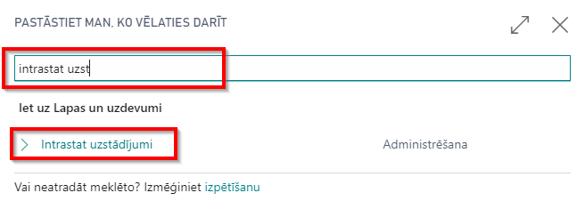
- Aizpildiniet Intrastat uzstādījumus, kur pieejami sekojoši lauki:
- Ziņot par saņemšanu - izvēlieties, ja jums ir jānorāda preču saņemšana Intrastat pārskatos.
- Ziņot par nosūtīšanu - izvēlieties, ja jums ir jānorāda preču nosūtīšana Intrastat pārskatos.
- Intrastat kontaktpersonas tips - nav jānorāda
- Intrastat kontaktpersonas Nr. - nav jānorāda
- Noklusēts trans. tips - izvēlieties pārdošanas un iepirkšanas darījumiem noklusējuma transakcijas tipu. Piemēram, " 11";
- Noklus. transakc.-Atgriešana - izvēlieties atgriezto pārdošanas un iepirkšanas darījumu noklusējuma transakciju tipu. Piemēram " 21".
Intrastat žurnālu veidnes
Pēc LVI.LVI.INTRASTAT konfigurācijas pakotnes attiecināšanas, papildiniet Intrastat žurnālu veidņu uzstādījumus.
- Klikšķiniet uz pogas Meklēt Lapu vai Atskaiti...
- Ierakstiet Intrastat žurnālu veidnes un izvēlieties to no saraksta Administrēšana 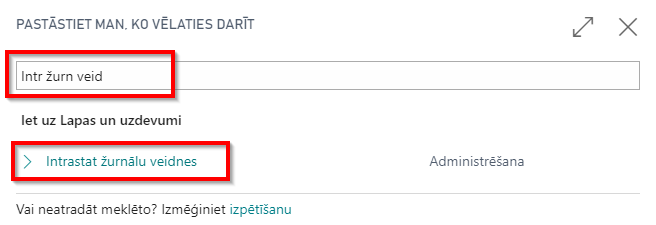
- Izveidojiet jaunu Intrastat žurnāla veidni:
- Nosaukums - norādiet jaunā Intrastat žurnāla veidnes nosaukumu. Piemēram, " INTRASTAT".
- Apraksts - veiciet īsu Intrastat žurnāla veidnes aprakstu. Piemēram, "Intrastat žurnāls" 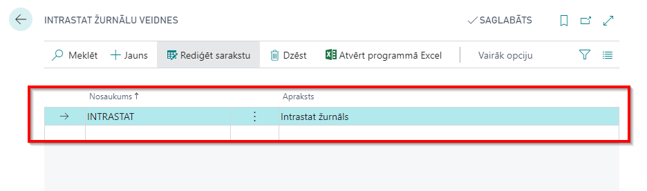
Tarifu numuri, Transakciju tipi, Transportēšanas metodes, Kravas nosūtīšanas metodes
Veidojot jaunus tarifu numurus, transakcijas tipus, transportēšanas metodes un/ vai kravas nosūtīšanas metodes, lūdzu balstieties uz Dynamics 365 Business Central tiešsaistes lietošanas instrukciju. šie dati ir daļa no Intrastat reportēšanas un ir pieejami Centrālās Statistikas pārvaldes mājaslapā, kur dati var arī tikt mainīti. Veidojot jaunas vērtības, aizpildiet sekojošus laukus:
- Kods - norādiet kodu, saskaņā ar Centrālās statistikas pārvaldes prasībām;
- Apraksts - norādiet koda aprakstu, saskaņā ar Centrālās statistikas pārvaldes prasībām 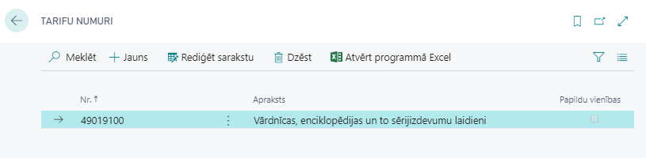
Preču kartiņas
Pēc LVI.LVI.INTRASTAT konfigurācijas pakotnes attiecināšanas, papildiet katras preces kartiņu ar informāciju, kas nepieciešama Intrastat reportēšanai.
- Klikšķiniet uz pogas Meklēt Lapu vai Atskaiti...
- Ierakstiet Preces un izvēlieties to no sadaļas Saraksti 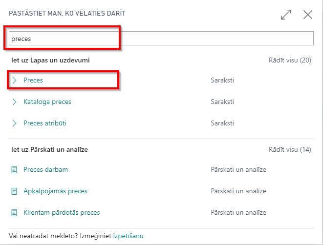
- Atveriet katru preces kartiņu, kam preces tips ir Krājumi, un papildiniet to ar sekojošu informāciju:
- Neto svars - norādiet preces neto svaru tā bāzes mērvienībā
- Bruto svars - norādiet preces bruto svaru tā bāzes mērvienībā
- Tarifa Nr. - norādiet preces tarifa numuru
- Izcelsmes valsts/reģiona kods - norādiet preces izcelsmes valsts kodus 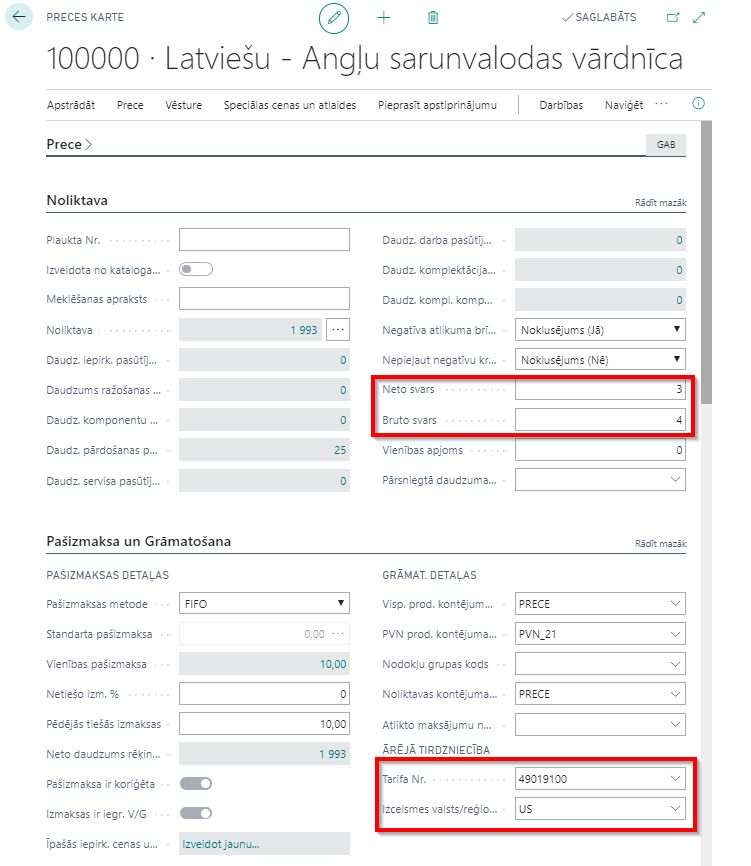
Piezīme
Lūdzu, ņemiet vērā, ka preces kartiņas obligātiem laukiem jau būtu jābūt aizpildītiem, lai nodrošinātu veiksmīgu preces saņemšanu un nosūtīšanu.
Klienta/ piegādātāja kartiņa
Lai varētu veiksmīgi lietot Intrastat funkcionalitāti, jāpārliecinās, vai visās klientu un piegādātāju kartiņās ir aizpildīts Valts/ Reģiona kods. 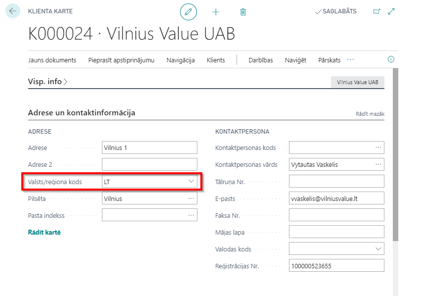 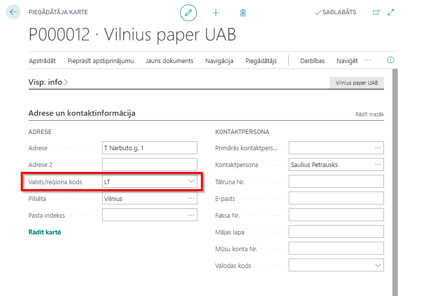
Piezīme
Lūdzu, ņemiet vērā, ka klienta/ piegādātāja kartiņas obligātiem laukiem jau būtu jābūt aizpildītiem, lai nodrošinātu veiksmīgu preces saņemšanu un nosūtīšanu.
Pēc izvēles, Preces nosūtīšanas metodes kods var tikt aizpildīts arī Kienta/ Piegādātāja kartiņā.
Kā lietot?
Kā lietot: reģistrējiet no Eiropas Savienības saņemtus sūtījumus no Iepirkuma pasūtījumiem/ Pārdošanas atgriešanas pasūtījumiem/ Pārvietošanas pasūtījumiem
Mērķis: Lai iegūtu korektus datus Intrastat pārskatam, ir svarīgi ievadīt pirms iegrāmatošanas visu nepieciešamo informāciju sagatavojot ES pārdošanas/ iepirkšanas un atgriešanas/ pārvietošanas dokumentos.
Pieejams no: iepirkšanas pasūtījumiem/ pārdošanas atgriešanas pasūtījumiem/ pārvietošanas pasūtījumiem, kas ir sasniedzami no pogas Meklēt Lapu vai Atskaiti…
Priekšnosacījumi: Pirms preces saņemšanas iegrāmatošanas nepieciešams ievadīt preces kartiņā sekojošu informāciju:
- Neto svars
- Bruto svars
- Tarifa Nr.
- Izcelsmes valsts/reģiona kods
Pirms preces saņemšanas iegrāmatošanas nepieciešams ievadīt iepirkšanas pasūtījumu/ pārdošanas atgriešanas pasūtījumu/ pārvietošanas pasūtījumu dokumentācijā sekojošu informāciju:
- Kravas nosūtīšanas metode
- Transakcijas tips
- Transportēšanas metode
Kā lietot: reģistrējiet uz Eiropas Savienību veiktus sūtījumus no Iepirkuma atgriešanas pasūtījumiem/ Pārdošanas pasūtījumiem/ Pārvietošanas pasūtījumiem.
Mērķis: Lai iegūtu korektus datus Intrastat pārskatam, ir svarīgi ievadīt pirms ES piegādes grāmatošanas visu nepieciešamo informāciju sagatavojot ES pārdošanas/ iepirkšanas un atgriešanas/ pārvietošanas dokumentos.
Pieejams no: iepirkšanas atgriešanas pasūtījumiem/ pārdošanas pasūtījumiem/ pārvietošanas pasūtījumiem, kas ir sasniedzami no pogas Meklēt Lapu vai Atskaiti…
Priekšnosacījumi: Pirms preces nosūtīšanas grāmatojuma nepieciešams ievadīt preces kartiņā sekojošu informāciju:
- Neto svars
- Bruto svars
- Tarifa Nr.
- Izcelsmes valsts/reģiona kods
Pirms preces nosūtīšanas grāmatojuma nepieciešams ievadīt iepirkšanas atgriešanas pasūtījumu/ pārdošanas pasūtījumu/ pārvietošanas pasūtījumu dokumentācijā sekojošu informāciju:
- Kravas nosūtīšanas metode
- Transakcijas tips
- Transportēšanas metode
Kā lietot: Sagatavot Intrastat žurnālu, izdrukāt pārskatu un ģenerēt failu Centrālās Statistikas birojam.
- likšķiniet uz pogas Meklēt Lapu vai Atskaiti...
- Ierakstiet Intrastat žurnāli un izvēlieties to no saraksta Uzdevumi 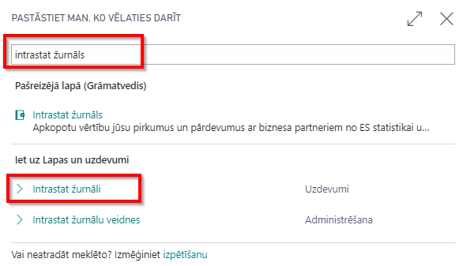
- izveidojiet jaunu Intrastat žurnāla iedaļu 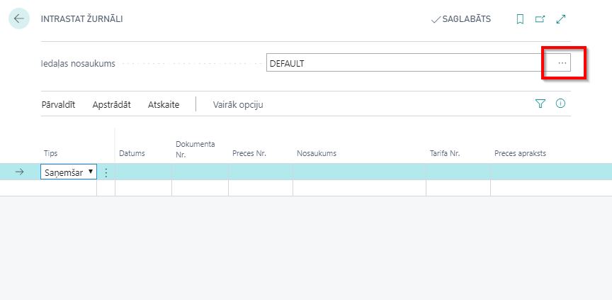 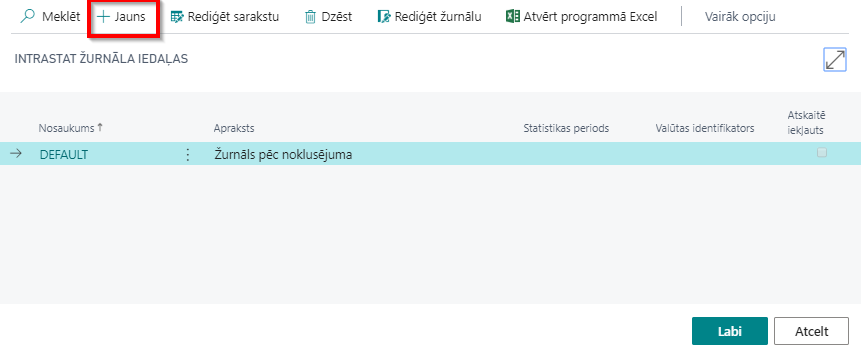
- Aizpildiet visus prasītos lauciņus jaunās Intrastat žurnāla iedaļas izveidei un nospiediet pogu Labi. Tiks prasīts aizpildīt sekojošus lauciņus:
- Nosaukums - ierakstiet žurnāla nosaukumus. Ir ieteicams veidot katram pārskata periodam savu žurnāla iedaļu, piemēram, " 2020_3".
- Apraksts - ierakstiet īsu žurnāla aprakstu. Piemēram, Marts 2020.
- Statistikas periods - ierakstiet statistikas pārskata periodu formātā GGMM. Piemēram "2003". 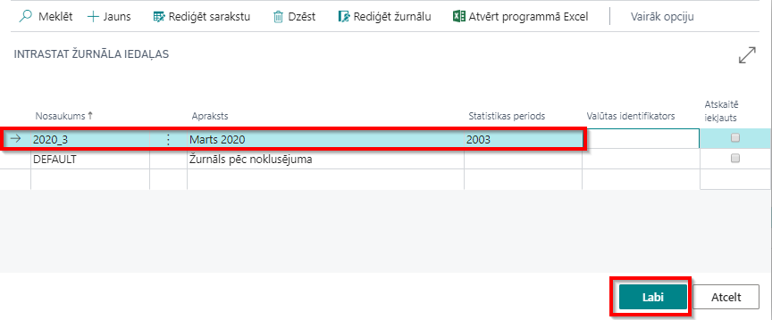
- Intrastat žurnāla " 2020_3" Rīkjoslā izvēlieties funkciju Piedāvāt rindas... 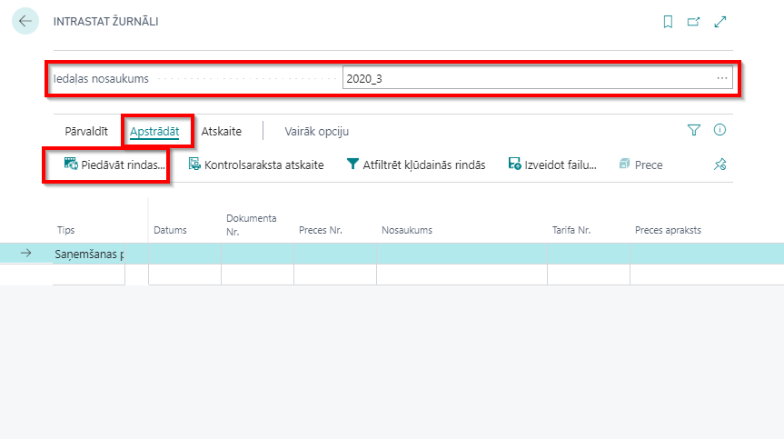
- Opciju logā pārliecinieties, vai pārskata periods ir korekts un visi nepieciešamie filtri ir iestatīti, un nospiediet pogu Labi. 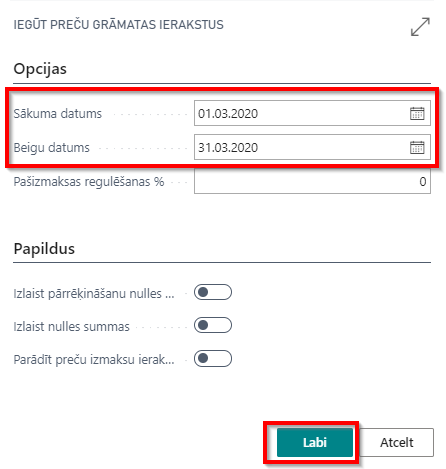
- Pārbaudiet sagatavotās darījumu rindiņas 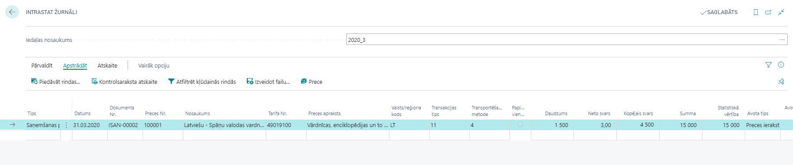
Piezīme
Intrastat žurnāls nevar tikt sagatavots, ja preces kartiņā nav ievadīts Tarifa numurs un ir bijuši sagatavotā statistikas pārskata periodā ES izvedumi vai ES ievedumi, kas saistīti ar konkrēto preci.
Ja kāda informācija Intrastat žurnāla rindiņās trūkst, to var manuāli aizpildīt.
Izdrukājiet Intrastat pārskatu vai sagatavojiet failu XML formātā
- Pārskata veids - izvēlieties nepieciešamo pārskata veidu:
- Ievedums 1-A;
- Ievedums 1-B;
- Izvedums 2-A;
- Izvedums 2B.
- Pārskata iesniedzējs - izvēlieties no saraksta darbinieku, kas ir atbildīgais par pārskata iesniegšanu;
- Veidot CSB XML failu: - ja izslēgts, tad, nospiežot pogu Drukāt, tiks sagatavota pārskata izdruka; - ja ieslēgts, tad, nospiežot pogu Drukāt, tiks sagatavots fails XML formātā.
- Pārskata veids - izvēlieties nepieciešamo pārskata veidu:
 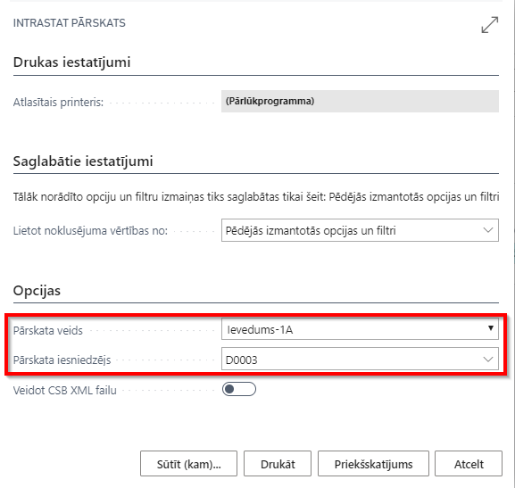
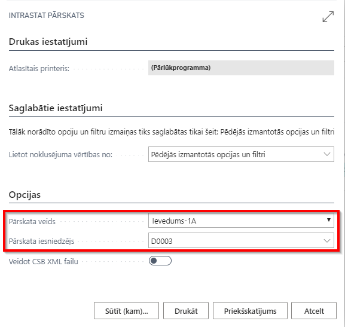